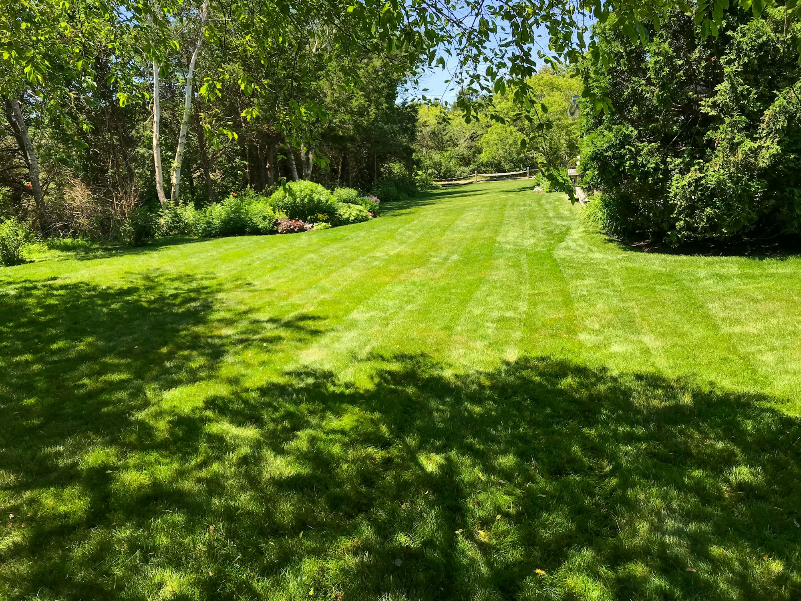
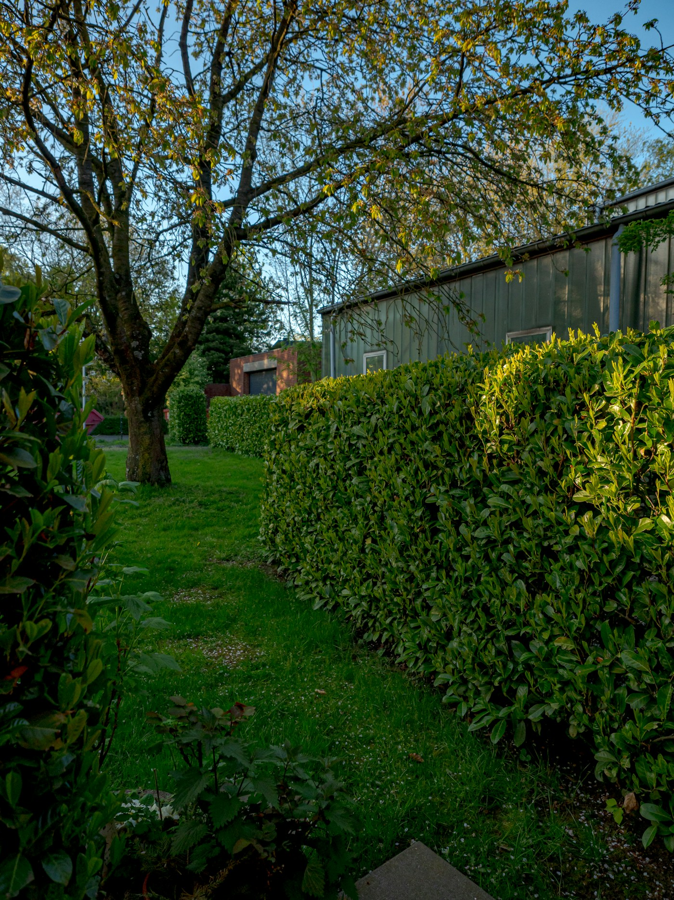

Gartenpflege aus Thalwil.
Garten-Profi Rico Jänsch, Seestrasse 33. Rufen Sie an oder schreiben Sie.
Arbeiten im Garten
Ein Vorschlag. Leistungen noch zu bestätigen
Rasen
Mähen und pflegen.
Hecken und Sträucher
Schneiden und in Form halten.
Beete
Pflanzen, jäten, pflegen.
Weiteres
Nach Absprache am Telefon.
